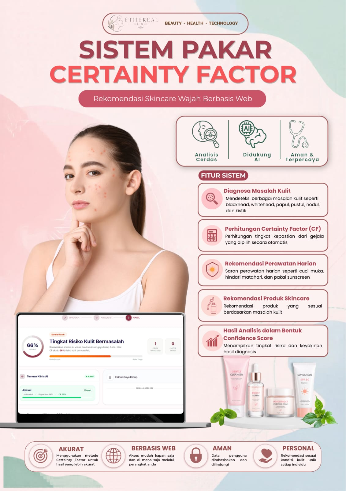
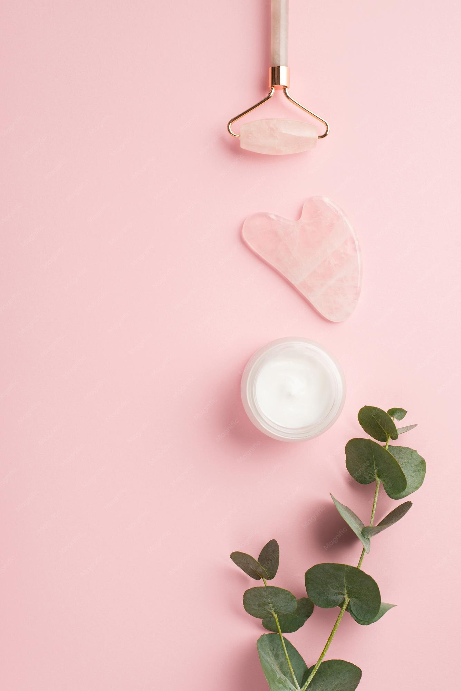

Pahami Kulitmu,
Temukan
Solusinya
Sistem pakar kami menggunakan algoritma Certainty Factor untuk memberikan akurasi diagnosis kesehatan kulit yang terpercaya, layaknya berkonsultasi langsung dengan ahli dermatologi.

Cara Kerja Sistem
Proses diagnosa cerdas yang dirancang untuk memberikan hasil yang personal dan akurat.
Scan
Ambil foto area kulit atau jawab beberapa pertanyaan mendalam mengenai kondisi kulit Anda saat ini.
Validasi
Sistem melakukan kalkulasi Certainty Factor berdasarkan basis pengetahuan pakar dermatologi kelas dunia.
Diagnosa
Dapatkan laporan detail mengenai kondisi kulit Anda beserta rekomendasi produk dan penanganan yang tepat.


Mengapa Memilih Kami?
Akurasi Berstandar Medis
Algoritma Certainty Factor kami meminimalisir ketidakpastian dalam diagnosa mandiri.
Cepat & Real-time
Dapatkan hasil diagnosa hanya dalam hitungan detik tanpa perlu mengantre di klinik.
Rekomendasi Terpercaya
Saran produk yang netral dan berbasis pada kebutuhan molekuler kulit Anda.
Siap Mengenal Kulitmu Lebih Dalam?
Bergabunglah dengan ribuan pengguna yang telah menemukan rutinitas skincare yang tepat melalui sistem kami.
Mulai Konsultasi Gratis